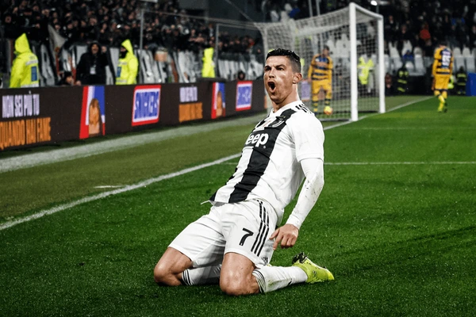
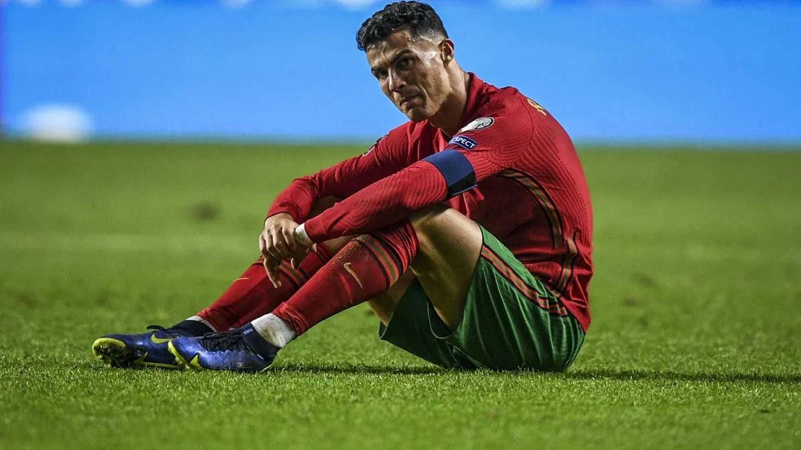
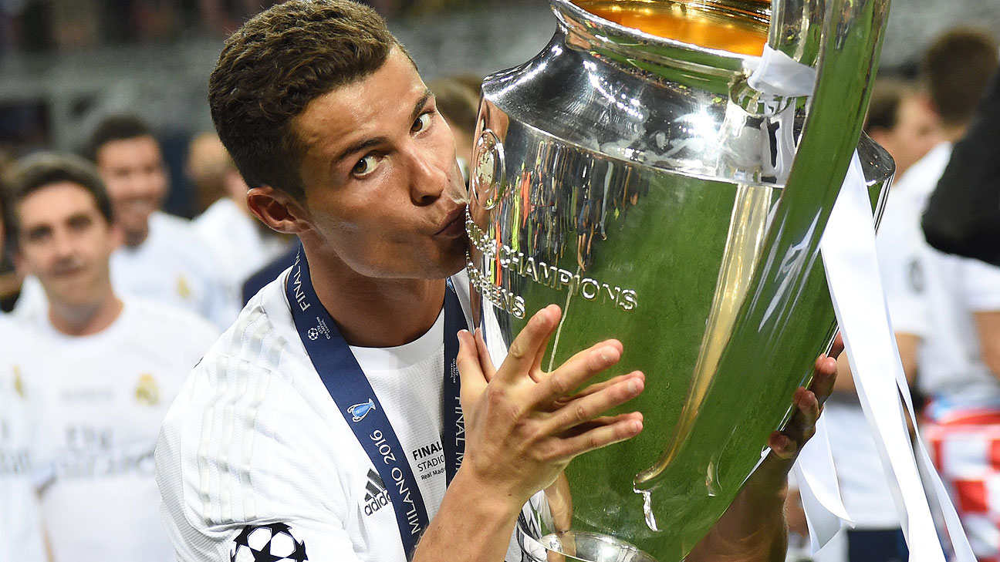

Cristiano Ronaldo Dos Santos Aveiro
Fecha de nacimiento: 05/02/1985
Lugar de nacimiento: Funchal (Portugal)
Posición en el campo: Delantero
Partidos jugados: 438 oficiales
Goles marcados: 451
Internacional con Portugal: 154 veces
Logros
Cristiano Ronaldo ha sido un ícono en el fútbol, marcando una gran cantidad de goles y obteniendo muchos premios:
- 5 Balones de Oro
- 4 Champions League
- Campeón de la Eurocopa 2016
- Máximo goleador de la UEFA Champions League
Galería


